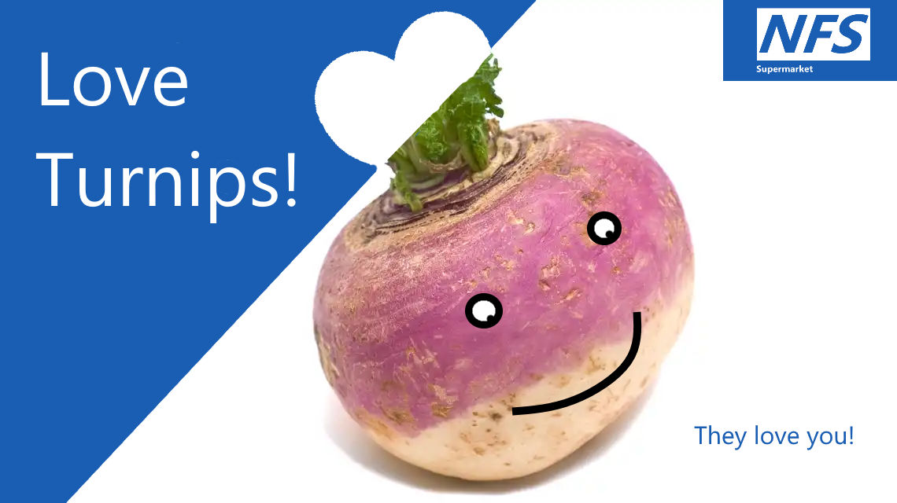
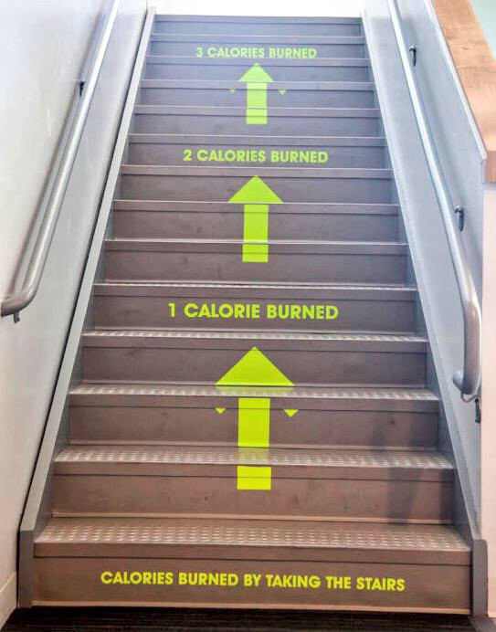

ego
(@egocv)
I entered my assigned NFS Supermarket at 13:49.
I took a trolley and pressed my thumb against the control unit on the handle. The holographic girl appeared. The bottom dropped out of my stomach, like always.
She was perfect. Utterly wonderful. The most beautiful creature I had ever seen. She was like the product of a dream — bits of all the girls I had every loved pieced together into a whole that somehow didn't quite stay in the mind upon waking. Young, smiling, callipygian, innocent. Sometimes I thought I saw a fragment of my first girlfriend, a childhood crush's nose, my ex-wife's eyes. Her lips were painted a pure primary blue, picked perfectly to match her uniform. She smiled and shook her hair.
I tore my gaze away to look into my trolley. The girl's voice was like honey and saffron "We prefilled your cart with healthy choices, Tom. Turnips are in season today!" she winked.
My cart contained at least 20 turnips.
Next to me an old lady was struggling to push her own turnip-filled cart while she chatted to a muscular hologram in a tight-fitting blue shirt.
"Turnips are full of vitamins" said the holo-girl "feel free to put them back on the shelf, if you want something less healthy" she pouted. "The last guy bought so many turnips"
I tried to ignore her
"Turnips are full of vitamins!"

The displays at the front of the store were piled high with vegetables. Every few seconds they would be dusted with a soft mist that smelt of fresh cut grass and strawberrys. Tasteful uplighting caused the beads of water to glisten, deliciously. The biggest display was full of turnips. A sign said "LAST CHANCE TO BUY - ALMOST GONE" and "SPECIAL OFFER - BUY ONE TURNIP, GET ONE FREE". A large green arrow on the floor pointed toward the turnip stand.
I dutifully began taking the turnips out of my trolley and trying to stack them back on the display before the girl popped back into view. She winked again "if you would like to out-out of your default food selection" (pout) "please do so at the secondary turnip display at the rear of the store" (wink)
"I need some oranges, first. I thought those were at the front of the store?"
"Recent research shows that Oranges are very unhealthy, Tom. Maybe try a lemon! Delicious and low in sugar!"
I dutifully placed my turnips back in the trolley and trundled it through the vegetable section, past the fruits, the grains, lentils and rice, around a small selection of wholemeal bread, to the turnip return area next to the lemons. Above the huge pile of turnips a sign noted 'MOST POPULAR ITEM THIS WEEK — TURNIPS!'. Next to it another screen flashed to life to show 'the girl', scantily clad, squeezing a lemon into her upturned open mouth, juice running down her face and neck. "Eat lemons, not oranges!", the sign winked at me.
Turnips had been on special offer for the last four months, since a formula error in the spreadsheet used by the NFS for farm planning caused 10x the usual amount of turnips to be planted. They were (we were assured) a nutritious vegetable, and really (we were assured) we were better off with the surplus.
I returned my turnips. I was very careful to place them delicately, to avoid causing a turnip slide. I was afraid I would be told to purchase any turnip that fell to the floor. I imagined the whole pile slithering down, turnips bouncing through the shop, the girl shaking her head and telling me "Sorry Tom, you break it, you buy it!".
I could not eat another turnip. I simply couldn't. I had developed an allergy, or at least an intolerance, a powerful burning hatred at any case. I would rather eat rat than turnip at this point. If I saw another turnip I might scream. I might hurt myself. My fists clenched involuntarily and I swore under my breath "fuck.. fucking turnips"
Immediately the cart began flashing and playing a sad warbling noise. I quickly crouched down to search for the obscenity reminder reset button that was usually under the handle. The other shoppers stopped what they were doing to look at me. A small child pointed and asked her mother 'what did the bad man do?' before being shushed. It took me a few minutes to find, this time they had put it under the child seat.
My cart now gloriously free of turnips, I now headed for a grimy plastic door curtain in one side of the supermarket. My heart was thumping. I smiled for the first time all week. I felt, somehow naughty. I felt cool. The other shoppers were all milling around in the vegetable aisle, or queuing for fresh-squeezed lemon juice, but not I. I was going through the curtain. I swaggered. I spun the cart around as I walked, rakishly. Oh, how alive I felt!
The corridor behind the curtain was dark in comparison to the vibrant white of the main store. I pushed the trolley through, feeling the floppy plastic strips flap wetly against my back. The perky music of the store became muffled. I moved quickly to avoid letting my eyes adapt to the gloom, and hurried down the corridor toward the room beyond.
As always, the wheels began to lock up. I swore again before I could catch myself. A high pitched voice came from the display on the handle of the cart, shouting over the obscenity reminder that was once again active. "To offset the unhealthy items contained in this part of the store" she screamed, "we are enabling resistance mode on this cart. To opt-out of this service, please take the cart to the reception center behind the store, and fill out an opt-out form!". I leaned into the cart, forcing it down the corridor. A few minutes later the voice piped up again cheerfully "Well done! You have burnt one calorie!" she winked and did a fist-pump. All the time the cart continued flashing and warbling.

At the end of the corridor a damp concrete room. I took a few seconds to disable the alarm. On the ceiling, a buzzing fluorescent lamp illuminated bare metal racks along the walls. The racks were full of identical grey boxes, the size of a hardback book. I ran my finger down the line, reading the tiny white words on the edge of each box, 'sugar, sugar, refined flour, cornflakes, orange, orange juice, apple juice, chocolate' aha. 'Cigarette, single'. I shook the large box to make sure there was still a cigarette inside. It rattled softly. I threw the box into the cart and hunted around for more. After 10 minutes I had gathered seven cigarettes and my cart was full.
From the main store I heard a muffled announcement "IF WE SELL 2,000KG OF TURNIPS TODAY, THE STORE DOG GETS A SPECIAL TREAT! ONLY 1,320kg TO GO! LET'S WORK TOGETHER!"
A the mention of the hated vegetable my fists clenched again. I tried to push the anger back down. I pushed the cart violently, causing it to buck upwards as it hit a pothole on the concrete floor. It careened into a wall with a crash. The girl's voice was disproving this time "It costs us £17 every time someone damages the cart, most people do not damage the cart" a puff of ammonia was dispensed from the trolley. I wrinkled my nose in disgust. "Well done, you have burned four calories!" she added.
I headed straight for the checkout, head spinning, avoiding the looks of shoppers disgusted by the stench of urine that clung to my shopping. I arrived at the self-checkout counter just as the woman in front was finishing. She scanned a final turnip and a bag of spinach. The items flashed up on a large monitor hung over the checkout area with a happy "bing" and a green tick next to the vegetables. I took her place and began to scan my cigarettes, one by one. Each time the cigarette flashed up on the monitor accompanied by a red sad-face and a low 'bong' noise.
The girl's voice from the monitor prompted me "you purchased SEVEN unhealthy items to day. Are you sure?" I hit YES.
"We care about your well being, hit "REPLACE" to replace one of your unhealthy choices with a government recommended healthy choice!" I hit "NO THANK YOU, I WISH TO RETAIN MY UNHEALTHY CHOICES".
The machine said "Would you like to add a healthy turnip to your order?". I hit the "NO" button very quickly but saw at the last second that the two buttons positions had reversed since the last question. The monitor gurgled happily "Well done! An assistant will deliver a turnip for you now!"
I was enraged. I grabbed a turnip from a nearby stand and threw it at the monitor. It bounced off, wetly. Tears ran down my face. Why couldn't I just be like everyone else? They all seemed so happy. Everything suited them just fine. My ears were ringing. I saw only the face of the girl, in front of me. I was filled with confusion: hatred, lust, disgust, desire. There was only one way out. I was a problem, a drain on society. Undesirable. My hand moved to my pocket. I became aware of her voice whispering in my ear, it sounded more like my ex-wife now, I remembered her face when I found here, she looked so peaceful "— the only way, go on, it will be painless, so brave, such a brave man, you do not belong in this world, you can join —" I felt in my pockets for the packet. It was always around, always being passed out at work or at the mall, or sent to my house. Every day they sent me a packet. "Just in case" it said on the box. The little pill that stops the pain. The little black pill "do it...do it" said the voice "do it..."